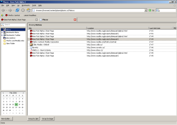

Správa roz¹íøení v u¾ivatelském profilu Firefoxu 1.5 je øe¹ena dobøe. Tedy a¾ na jeden drobný detail.
Oním detailem je konfigurace instalovaných roz¹íøení. Pokud roz¹íøení nastavíte, je logické, ¾e toto nastavení se mùsí do u¾ivatelského profilu nìkam ulo¾it. Zde je základní kámen úrazu. Nikde toti¾ nìní øeèeno ani doporuèeno kam. Je to na libovùli autorù roz¹íøení a je to bohu¾el znát.
Øada roz¹íøení ukládá svou konfiguraci do hlavního konfiguraèního souboru prefs.js. V zásadì rozumné øe¹ení a¾ na to, ¾e se míchá konfigurace aplikace s konfigurací roz¹íøení. Výsledný soubor je tak èím dál vìt¹í. Celkovì tedy ne moc rozumná koncepce. Navíc ani konvence ukládaných pøedvoleb není jednotná. Nìkteøí autoøi roz¹íøení volí formát extensions.*, druhá skupina pak podle jména roz¹íøení zaèína pøímo øetìzec pøedvolby. Napø. forecastfox.*.
Uvedený konfiguraèní soubor, který má formát klíè-hodnota, není vhodný na ukládání rozsáhlej¹ích dat. Jako ukázku nevhodnosti by mohlo poslou¾it roz¹íøení AdBlock, které si v¹echny filtry ukládá do jedné pøedvolby.
Pokud roz¹íøení potøebuje ukládat vìt¹í mno¾ství údajù (dat), volí autoøi roz¹íøení samostatný soubor. Napøíklad roz¹íøení Mouse Gestures ukládá data do souboru mousegestures.rdf. Nìkterá roz¹íøení, jako napøíklad ForecastFox, ukládají v¹echna data do vytvoøeného podadresáøe v profilu. V¹e je na libovùli autora roz¹íøení a to je ¹patnì.
Nyní si pøedstavte situaci, kdy si na doporuèení známého nainstalujete roz¹íøení. Chvíli jej pou¾íváte, ale po pár dnech pou¾ívání se jej rozhodnete odinstalovat. Roz¹íøení tedy odinstalujete a ¾ijete v domnìní, ¾e v¹e je jako pøed pár dny. Omyl. Konfiguraèní údaje zùstaly. Je jedno, zda byly ukládány do souboru prefs.js èi do samostatných souborù. Nic z toho se pøi odinstalaci neodstraní. V pøípadì samostatného souboru s konfigurací to zas a¾ tolik nevadí, rostoucí velikost souboru prefs.js je u¾ vìt¹í problém.
Kdybych to mìl celé shrnout, tak problémy jsou v zásadì dva:
- Není sjednoceno, kam smí roz¹íøení ukládat svou konfiguraci. A u¾ vùbec není oddìlena konfigurace aplikace od konfigurace roz¹íøení.
- Neexistuje mechanismus na úrovni aplikace, kterým byste øekli, ¾e spolu s roz¹íøením chcete odinstalovat i jeho konfiguraci.
A nedejbo¾e, ¾e jste autorem software na zálohování podobného profilu...
Nainstalujete si Firefox a po spu¹tìní zjistíte, ¾e v nìm "nefunguje Internet". Pøitom po spu¹tìní Internet Exploreru zjistíte, ¾e v nìm funguje v¹e bez problémù. Kde hledat pøíèinu?
Pøíèiny bývají v zásadì dvì. Nejèastìj¹í je firewall, který máte na PC nainstalován, a který Firefox blokuje. Povolte tedy Firefox na firewallu. Postup, jak toho docílit, se li¹í v závislosti na tom, jaký firewall máte nainstalován.
Druhým zdrojem problému je proxy server. Dost èasto se pøes nìj pøistupuje k Internetu. Zejména ve firemních sítích bývá hojnì pou¾íván. Ve Firefoxu tedy musí být nastavena jeho adresa. V dialogu Mo¾nosti klepnìte na tlaèítko Nastavení pøipojení. V zobrazeném dialogu nastavte adresu proxy serveru. Pokud jeho adresu nevíte, opi¹te ji z nastavení Internet Exploreru (Nástroje -> Mo¾nosti Internetu, karta Pøipojení a tlaèítko Nastavení místní sítì) nebo se zeptejte správce sítì.
Pøi práci se zálo¾kami ve Firefoxu mohou nastat v zásadì tøi problémy.
- Ztráta zálo¾ek – Øe¹ení tohoto problému jsem zde ji¾ popisoval. Dost èastým zdrojem tohoto problému bývají výpadky proudu v kombinaci s pou¾íváním souborového systému FAT32.
- Ztráta provedených zmìn – Pokud po opìtovném spu¹tìní Firefoxu vidíte pùvodní podobu zálo¾ek beze zmìn, které jste provedli pøi minulém spu¹tìní, je chyba na stranì nastavení atributu "pouze ke ètení" souboru bookmarks.html v u¾ivatelském profilu. Ve vlastnostech souboru tedy tento atribut zru¹te.
- Nelze pøidat zálo¾ku – Tento problém nejspí¹ souvisí s po¹kozeným souborem localstore.rdf v u¾ivatelském profilu Firefoxu. Ukonèete Firefox a tento soubor vyma¾te. Pozor! Smazáním tohoto souboru zru¹íte té¾ nastavení li¹t, které musíte znovu nastavit. Dal¹í mo¾ností této nefunkènosti je nìkteré z nainstalovaných roz¹íøení.
Pokud se vám nedaøí v Thunderbirdu odesílat e-maily, patrnì se bude jednat o jeden z následujících problémù.
Po vytvoøení nového úètu v Thunderbirdu se obèas mù¾e stát, ¾e pøi odesílání e-mailu na vás vyskoèí dialog, který se do¾aduje zadání hesla. Pøíèina je v zapnuté autentizaci. V hlavní nabídce zvolte Nástroje – > Nastavení úètu, v zobrazeném dialogu v seznamu úètù zvolte Server odchozí po¹ty (SMTP), zvolte vá¹ server a klepnìte na tlaèítko Upravit. V zobrazeném dialogu v sekci Zabezpeèení a autentizace od¹krtnìte volbu Pou¾ít jméno a heslo. Tím vyøe¹íte problém.
Pokud SMTP server pøi odesílání nereaguje, pøesvìdète se, zda jste jeho adresu zadali dobøe èi není odesílání skrze SMTP blokováno firewallem, který máte nainstalován(a) na PC.
Dost èastým zdrojem problémù je té¾ vyu¾ívání jiného SMTP serveru, ne¾ toho, který je pro danou sí» urèen. Pro odesílání po¹ty byste mìli primárnì pou¾ívat SMTP server va¹eho poskytovatele pøipojení, pøes kterého jste momentálnì pøipojeni. Pokud tøeba v práci vyu¾íváte SMTP server smtp.mojefirma.cz, pak doma, kde jste napøíklad pøipojeni pøes Karneval, nebudete moci tento server pou¾ívat, proto¾e je urèen (mìl by) pouze pro po¹tu odesílanou z firmy. V øadì sítí je navíc pøístup k jinému SMTP serveru, ne¾ tomu, který je pro danou sí» urèen, blokován.
Zazálohování událostí a úkolù je snadné. Ukonèete Mozilla Sunbird a vyhledejte u¾ivatelský profil, který nejèastìji naleznete v cestì C:\Documents and Settings\ [U¾ivatelské jméno]\Data aplikací\Mozilla\Sunbird\Profiles\ a v nìm soubor storage.sdb. Ten obsahuje v¹echny lokálnì ulo¾ené kalendáøe. Lze jej tedy zazálohovat a kdykoliv prostým zkopírováním obnovit
Podotýkám, ¾e tento popis je platný pro Mozilla Sunbird 0.3a1 a nejspí¹ i pro dal¹í verze.
Nastavíte si vlastní uspoøádání li¹t Firefoxu a on je po opìtovném spu¹tìní nastaví zpìt do výchozího stavu. Jak tento problém vyøe¹it?
Vypnìte Firefox a pøejdìte do u¾ivatelského profilu. Zde vyma¾te soubor localstore.rdf. Nyní by mìlo být v¹e v poøádku a Firefox by si mìl nastavení li¹t pamatovat.
Kdy¾ se ménì zku¹enému u¾ivateli øekne, zmìò si v about:config to èi ono, nejspí¹ nebude vùbec tu¹it. Co tedy vlastnì about:config je a k èemu slou¾í?
Firefox je velmi dobøe konfigurovatelný. Základní mo¾nosti konfigurace naleznete v hlavní nabídce pod Nástroje -> Mo¾nosti. Pokud by ve Firefoxu byl dialog, který by obsahoval ve¹keré konfiguraèní mo¾nosti, které jsou k dispozici, byl by pravdìpodobnì natolik slo¾itý, ¾e by se v nìm málo kdo orientoval.
U¾ivateli jsou tedy v konfiguraèním dialogu nabídnuty pouze základní a nejèastìji vyu¾ívané pøedvolby. Zbytek je skryt na stránce about:config. Tu si zobrazíte tak, ¾e do adresního øádku zadáte about:config místo adresy webové stránky. Zobrazí se vám dlouhý seznam pøedvoleb.

Pokud oznaèíte libovolnou pøedvolbu, pod pravým tlaèítkem my¹i naleznete volbu Zmìnit. Zvolte ji a zobrazí se vám dialog, který vám umo¾ní zmìnit její hodnotu. To se týká pøípadù, kdy mìníte pøedvolbu, která je textového èi èíselného typu. Øada pøedvoleb je typu boolean (pøepínáni mezi dvìma stavy). Pro ty v místní nabídce nenaleznete mo¾nost Zmìnit, ale pouze Pøepnout.
Základní otázka øady z vás zní, co jednotlivé pøedvolby znamenají. Podrobný pøehled pøedvoleb naleznete v Knowledge Base serveru MozillaZine. Seznam je tedy bohu¾el anglicky.
Stejnou stránku pøedvoleb neobsahuje pouze Firefox. Na stejném místì ji naleznete i v SeaMonkey resp. Mozilla Suite. V pøípadì Thunderbirdu hledejte v dialogu Mo¾nosti v sekci Roz¹íøení tlaèítko Editor pøedvoleb. Pokud pou¾ívate star¹í verzi Thunderbirdu ne¾ je 1.5, nainstalujte si roz¹íøení AboutConfig.
Pøedstavte si, ¾e máte v Thunderbirdu nìkolik úètù a pøidáte nový. Nevyhovuje vám v¹ak poøadí, v jakém jsou seøazeny. Jak zmìnit poøadí?
V zásadì jsou dvì mo¾nosti. První spoèívá v instalaci roz¹íøení Folderpane tools. Pokud se vám nechce kvùli podobné "drobnosti" instalovat roz¹íøení, ukonèete Thunderbird a v u¾ivatelském profilu zeditujte soubor prefs.js. V nìm vyhledejte øádek podobný user_pref("mail.accountmanager.accounts", "account1,account2,account3,account4");.
Co znamená "account1" atd. zjistíte podle okolních øádkù v prefs.js. Podstatné je, ¾e tato pøedvolba urèuje poøadí jednotlivých úètù. Prostým prohozením jednotliých úètù tøeba do tvaru "account3,account2,account1,account4" zmìníte jejich poøadí. Dùle¾itou vìcí je jen to, aby první uvádìný úèet (v tomto pøípade "account3") byl nastaven u pøedvolby mail.accountmanager.defaultaccount tj. user_pref("mail.accountmanager.defaultaccount", "account3");.
Pøed editací si pro jistotu soubor prefs.js zazálohujte. Editaci pøitom provádìjte v editoru, který podporuje reprezentaci UTF-8. Napø. PSPad.
Poznámka: Nejsem si teï úplnì jist, ale mo¾nost manuálního urèování poøadí úètù pøibyla a¾ u Thunderbirdu 1.5. V pøedchozích verzích se to realizovalo trochu odli¹nìji.
Nìkolik lidí v CZilla fóru se dotazovalo, jaký je vztah mezi Firefoxem 1.5 a pøicházející verzí 1.0.8.
Je to pomìrnì jednoduché. První finální verze Firefoxu nesla oznaèení 1.0. Po této verzi vy¹lo nìkolik aktualizací, které opravovaly pár drobností, ale hlavnì øe¹ily objevené bezpeènostní problémy. Jednalo se o verze 1.0.1 – 1.0.7.
Od podzimu je k dispozici Firefox 1.5. Nazvìme ho druhou finální verzí. K této verzi Firefoxu vy¹la aktualizace v podobì 1.5.0.1. Jedná se aktuální verzi Firefoxu, která je doporuèena k pou¾ívání. Øada lidí v¹ak dosud z nìjakého dùvodu pou¾ívá Firefox 1.0.x. Bylo by nerozumné nechat je bez bezpeènostních aktualizací, a proto pro nì pøichází Firefox 1.0.8.
Dá se øíci, ¾e obdobná situace je i v pøípadì Mozilla Suite, kdy je sice k dispozici nástupce v podobì SeaMonkey, ale proto¾e je¹tì øada lidí pou¾ívá Mozilla Suite, vychází na nìj bezpeènostní aktualizace.
Pokud z nìjakého dùvodu chcete odstranit Firefox ze systému, aby po nìm nic nezbylo, proveïte korektní odinstalaci programu podobnì jako odinstalaci kteréhokoliv jiného programu ve Windows. V adresáøi, kde byl Firefox nainstalován (nejèastìji C:\Program Files\Mozilla Firefox), odstraòte v¹echny zbývající soubory (pokud nìjaké zùstaly). Nakonec vyma¾te adresáø s u¾ivatelským profilem.
Ve vývojové vìtvi Firefoxu ode dne¹ka mù¾ete nalézt novinku v podobì Places. Pokud bych mìl tento výraz lid¹tìji vyjádøit, je to takový nový pohled na práci se zálo¾kami a historií prohlí¾eèe. Tato novinka bude k dispozici ve Firefoxu 2.0.
Tak trochu mi nedalo, abych se na to nepodíval a stáhl si vývojou verzi. Dle doporuèení jsem si vytvoøil nový profil a provedl spu¹tìní. První spu¹tìní Firefoxu nedopadlo nejlépe. Okno prohlí¾eèe se sice zobrazilo, ale rozhodnì ne tak, jak bych si pøedstavoval. Dùvodem je nejspí¹ chyba pøi práci s profilem, který ve své cestì obsahuje diakritické znaky. Vytvoøil jsem tedy nový profil v cestì bez diakritiky.
Ukázka Places:

Li¹ta zálo¾ek je nyní pryè a nahrazuje ji li¹ta Places. V jejím levém rohu je tlaèítko, které otevøe samostatný panel, který mù¾ete vidìt na obrázku vý¹e. Obsahuje centrální správu zálo¾ek, historie apod. Osobnì se mi toto pojetí celkem zamlouvá.
Zajímavý je i backend, který je postaven na databázové knihovnì SQLite. V u¾ivatelském profilu jsou nyní dva nové soubory – bookmarks_history.sqlite (pro ukládání zálo¾ek a historie) a formhistory.sqlite (historie formuláøù). Pùvodní soubory bookmarks.html (zálo¾ky), history.dat (historie prohlí¾ení) a formhistory.dat (historie formuláøù) nebudou tedy nadále pou¾ívány. Osobnì si od tohoto kroku slibuju rychlej¹í práci s historií prohlí¾eèe.
Celkovì mì Places potì¹ily. Prozatím nedoporuèuji pou¾ívat, proto¾e jen bìhem mého krátkého zkou¹ení mi Firefox nìkolikrát spadl a nìkteré funkce nefungovaly korektnì.
Aktualizováno: Z dùvodù nìkolika regresí a memory leakù jsou Places v posledních buildech doèasnì zakázány.
V poslední dobì nebylo pøíli¹ èasu, ale rád bych se zas pustil do dal¹ího vývoje MozBackupu. Mám nahlá¹eno nìkolik bug reportù, které se týkají zálohování roz¹íøení. Ty bych rád opravil a vydal opravnou verzi 1.4.4. Nejspí¹ do této verze zahrnu i novinky, které pøijdou s Firefoxem 2.0 Alpha 1 (teï mám na mysli hlavnì Places).
Dal¹ím "milníkem" bude verze 1.5, která bude kompletnì pøepsána. Rád bych, aby tato verze obsahovalo a umo¾òovala vìci, o které si èasto pí¹ete. Jedná se zejména o:
- Spustitelná verze pro Linux.
- Podpora spou¹tìní pøes pøíkazovou øádku.
- Mo¾nost zálohování neznámých souborù profilu.
- Podpora Mozilla Sunbird a Flock.
Novì vytváøená verze 1.5 bude k dispozici i se zdrojovými kódy. Kterou licenci zvolím momentálnì zva¾uji. Pokud máte pocit, ¾e by nová verze mìla nìco umìt, napi¹te mi. V souèasné dobì mù¾ete vznést po¾adavek na novou funkci èi nahlásit chybu pøímo pøes web na SourceForge.
Struèný návod, jak pøenést po¹tu a kontakty Thunderbirdu na jiné PC. Tento pøehled mù¾ete brát i jako návod na obnovení u¾ivatelského profilu, který jste si ruènì zazálohovali pøed reinstalací OS a teï nevíte, jak provést obnovu základních vìcí. Vìt¹ina vìcí je platná i pro SeaMonkey èi Mozilla Suite. Mù¾ete pomocí tohoto návodu té¾ provést migraci z Thunderbirdu na SeaMonkey (Mozilla Suite) èi obrácenì.
Jak zazálohovat
Pokud jste ve stavu pøed reinstalací èi prostì chcete zazálohovat u¾ivatelský profil, máte dvì mo¾nosti – automatickou èi ruèní. Automatickou variantu pøedstavuje pou¾ití nìkterého ze specializovaných softù, jako je napøíklad MozBackup. To je vcelku jednoduchá mo¾nost, tak¾e nemá smysl se o ní dále bavit.
Ruèní zalohování pøedstavuje prosté zkopírování celého profilu do zálohy. Ukonèete Thunderbird a zkopírujete u¾ivatelský profil na jiné místo na disku, kde budete mít data k dispozici po reinstalaci systému. Mù¾ete si jej té¾ vypálit na CD/DVD, pøíp. nahrát tøeba na USB disk a pøenést na jiné PC, kde chcete u¾ivatelský profil obnovit.
Kde naleznete u¾ivatelský profil:
Pøedpokládám, ¾e v¹echna data jako po¹tu máte v u¾ivatelském profilu. Existuje mo¾nost mít ji vnì profilu, ale standardnì tomu tak není. Pokud tedy nevíte, o èem mluvím, nic jste nemìnili a máte po¹tu v u¾ivatelském profilu.
Jak obnovit
Po reinstalaci èi na druhém PC, kam jste chtìli profil pøesunout, vytvoøte nový profil. Pokud máte èerstvì po instalaci a ¾ádný nemáte, Thunderbird jej po prvním spu¹tìní vytvoøí automaticky. Vytvoøte si v¹echny úèty, které jste mìli pøed reinstalací (pøesunem po¹ty), ale nestahujte novou po¹tu.
Ukonèete Thunderbird a pøejdìte do adresáøe s u¾ivatelským profilem. Pokud pøistupujete k po¹tì pøes protokol POP3, naleznete v záloze profilu adresáø Mail. V pøípadì IMAP je to adresáø Imap a u diskusních skupin adresáø News.
Tyto adresáøe obsahují podadresáøe s jednotlivými úèty, jako tøeba Local Folders èi tøeba pop.gmail.com. Jméno adresáøe je vytváøeno podle adresy, kam pøistupujete k po¹tì (s výjimkou slo¾ky Local Folders). U vás se tedy budou tyto adresáøe pravdìpodobnì jmenovat jinak.
Nyní zkopírujte obsah podadresáøù ze zálohy do ekvivalentních podadresáøù v novém u¾ivatelském profilu. V pøípadì shody jmen soubory pøepi¹te. Tím zkopírujete po¹tu. Pokud spustíte Thunderbird, uvidítì zpìt svou po¹tu. Ke spokojenosti tedy chybí pouze kontakty. Ukonèete Thunderbird.
Ze zazálohovaného u¾ivatelského profilu zkopírujte v¹echny soubory, které mají pøíponu *.mab. V pøípadì shody jmen v novém profilu proveïte pøepsání. V oblíbeném editoru, který nejlépe podporuje kódování UTF-8, otevøete soubor prefs.js z nového profilu. Oznaète v nìm v¹echny øádky, které zaèínají user_pref("ldap_2.servers, uma¾te je a na jejich místo doplòte ze souboru prefs.js v zálohovaném profilu v¹echny øádky, které opìt zaèínají user_pref("ldap_2.servers. Ulo¾te zmìny a proveïte spu¹tìní Thunderbirdu.
Kdy¾ v Thunderbirdu spou¹títe Adresáø, uvidíte zpìt kontakty. Pokud jste needitovali soubor prefs.js v editoru v kódování UTF-8, mají jednotlivé slo¾ky s kontakty po¹kozenou diakritiku, co¾ snadno spravíte pøejmenováním slo¾ek na správná jména.
Závìr
Pokud si pøejete obnovit i nìjaké dal¹í soubory, ukonèete Thunderbird a proveïte pøekopírování. Informaci o tom, co jednotlivé soubory znamenají, naleznete v pøehledu Soubory v profilu aplikací Mozilla. Nedoporuèuji se sna¾it obnovovat roz¹íøení a soubory, které Thunderbird generuje automaticky.
Pokud se vám u stavového øádku zobrazil divný ¹edý pruh èasto s textem, kterému moc nerozumíte, nezoufejte. Øe¹ení bývá snadné. Nejèastìj¹ím dùvodem této chyby je nìkteré z nainstalovaných roz¹íøení, které staèí odinstalovat. Postup øe¹ení je analogický s problémem Co dìlat, kdy¾ Firefox nejde spustit. Jen se nesna¾íte o zprovoznìní Firefoxu, ale o odstranìní uvedeného pruhu.
Vìt¹inou to nepotøebujete, ale v urèitých specifických situacích si pøejete mít spu¹tìné dvì rùzné verze Firefoxu souèasnì. Jak toho docílit?
Prvnì je potøeba pro ka¾dou verzi potøeba pøipravit samostatný u¾ivatelský profil, proto¾e není mo¾né, aby obì verze pou¾ívaly stejný. Potøebné profily vytvoøíte tak, ¾e ukonèíte Firefox a spustíte jej s parametrem "-P" tj. firefox.exe -P. V tém pøíkladu budu mít vytvoøeny dva u¾ivatelské profily – default (pro Firefox 1.5) a old (pro Firefox 1.0.7).
U první verze (1.5) upravím zástupce Firefoxu tak, aby se spou¹tìl s urèeným profilem tj. firefox.exe -p default (ano, zde je "p" malé). První verze by mìla být ta, kterou standardnì pou¾íváte tj. vá¹ výchozí prohlí¾eè. Dùvod vysvìtlím ní¾e. V adresáøi s instalací druhé verze Firefoxu (v mém pøípadì Firefox 1.0.7) vytvoøte BAT soubor, napø. firefox.bat s následujícím kódem:
@set MOZ_NO_REMOTE=1
@start firefox -p old
Druhou verzi Firefoxu nebudete tedy spou¹tìt standardnì pøes firefox.exe èi zástupce na plo¹e, ale pøes tento BAT soubor (i na nìj si ostatnì mù¾ete udìlat zástupce).
V zásadì je mo¾né spou¹tìt obì verze Firefoxu pøes takto vytvoøený BAT soubory. Osobnì to v¹ak nedoporuèuji, proto¾e pokud máte jeden z nich (tu první verzi Firefoxu) nastaven v systému jako výchozí, po poklepání na HTML soubor na disku se nemusí v prohlí¾eèi otevøít.
Nìkdo mù¾e namítnout, ¾e modifikace zástupce u první spou¹tìné verze není vlastnì nutná. V zásadì má pravdu, proto¾e pokud bude profil default oznaèen jako výchozí, skuteènì to není potøeba. Dle mì je v¹ak uvedené spou¹tìní jistìj¹í.
Uvedený pøíklad lze modifikovat na spou¹tìní i více ne¾ dvou verzí, ale skuteènì nevím, k èemu by vám to bylo :).
Nìkdy se vám po pádu Firefoxu mù¾e stát, ¾e po opìtovném spu¹tìní se místo prohlí¾eèe spustí Správce profilù. Kdy¾ pak chcete spustit Firefox s konkrétním profilem, nezdaøí se to a Firefox oznamuje, ¾e profil je pou¾íván. Èím to?
Aby si Firefox udr¾el pøehled o tom, který profil je pou¾íván, vytváøí si po spu¹tìní v u¾ivatelském profilu doèasný soubor parent.lock. Pokud je tento soubor v u¾ivatelském profilu, nedovolí Firefox jeho pou¾ívání jinou verzí Firefoxu (ano, lze mít spu¹tìné dvì rùzné verze Firefox).
Kdy¾ Firefox spadne, èasto po sobì nestihne tento soubor odstranit. Po opìtovném spu¹tìní si pak Firefox myslí, ¾e profil je nìkým pou¾íván. Proto jej nedovolí pou¾ít a nabídne Správce profilù pro vytvoøení nového.
Øe¹ení tohoto problému je snadné. Ukonèete Správce profilù, ve Správci úloh Windows se ujistìte, ¾e Firefox nebì¾í na pozadí (proces firefox.exe) tj. bì¾í, ale zaseknul se. Pokud ano, oznaète jej a ukonèete klepnutím na tlaèítko Ukonèit proces. V u¾ivatelském profilu následnì vyma¾te soubor parent.lock. Nyní by mìl jít Firefox bez problému opìt spustit.
Pokud se vám pøi instalaci samostatného lokalizaèního balíèku Seamonkey 1.0 stalo, ¾e na vás na konci instalace vyskoèila chyba 999, nemusíte se nièeho obávat. Pravdìpodobnì se sna¾íte nainstalovat jazykový balíèek, který ji¾ máte nainstalovaný. Proto¾e je v¹ak pou¾íván, nedovolí SeaMonkey jeho nahrazení okam¾itì, ale a¾ po opìtovném spu¹tìní. Trochu zmateèná signalizace, ale je tomu tak.
MozBackup má od dne¹ního dne novou podobu webu. Neèekejte nic revoluèního, prostì jen zmìna vzhledu. Postupnì chci pøidat nìjaký obsah a hlavnì trochu poskoèit s dal¹ím vývojem. Plánù je hodnì, èasu bohu¾el málo. Zároveò se omlouvám, ¾e jsem zru¹il èeskou verzi webu. Bohu¾el není èas na v¹echno, tak¾e preferuji anglickou verzi webu. Èeské u¾ivatele budu dále smìrovat na Sluneènici Èeské instalátory a ZIP verze budu i nadále vydávat.
Obèas si nìkdo stì¾uje, ¾e mu Firefox odmítá nabìhnout. Poklepe na ikonku a nic. Jak v podobným pøípadech postupovat? Nejèastìji u¾ivatelé tvrdí, ¾e prohlí¾eè reinstalovali a problém trvá. Zde je základní chyba. V takových 90% není chyba v instalaci prohlí¾eèe, ale v u¾ivatelském profilu.
Èím se mù¾e takový profil po¹kodit? Mo¾ností je celá øada – instalací ¹patnì napsaného roz¹íøení, neodbornou manipulací s profilem, výpadek proudu a tím po¹kození nìkterých souborù v profilu apod. Kdy¾ u¾ivatel spustí Firefox s takto po¹kozeným profilem, ¾ádné okno prohlí¾eèe se nezobrazí. Pokud spustíte Správce úloh, nejèastìji vidíte spu¹tìný proces firefox.exe. Prohlí¾eè se zkrátka nìkde zasekl.
Jak sjednat nápravu?
V lep¹ím pøípadì je problém na stranì nìkterého z nainstalovaných roz¹íøení. Jestli tomu tak je zjistíte spu¹tìním Firefoxu v safe módu. V nabídce Start -> Programy naleznìte odkaz na spu¹tìní Firefoxu. Hned vedle je druhý odkaz, který nese oznaèení "Safe mód". Spus»te jej.
Dal¹í mo¾ností je spustit Firefox v safe módu pøes pøíkazovou øádku. Pøejdìte do adresáøe s nainstalovaným Firefoxem (tam kde je firefox.exe, nejèastìji v cestì C:Program FilesMozilla Firefox) a proveïte jeho spu¹tìní s parametrem "-safe-mode" tj. firefox.exe -safe-mode.
Dùle¾itá poznámka: Pøed spu¹tìním se ujistìte ve Správci úloh, ¾e Firefox není spu¹tìn (by» se zasekl na pozadí). Vyhledejte proces firefox.exe. Pokud není, je v¹e v poøádku. V opaèném pøípadì jej oznaète a ukonèete (tlaèítko Ukonèit proces).
Pokud prohlí¾eè nabìhne, problém je na stranì nìkterého z nainstalovaných roz¹íøení. Zkuste je postupnì odinstalovávat a zkou¹et, zda po odinstalaci konkrétního roz¹íøení ji¾ Firefox nabìhne. To vyzkou¹íte tak, ¾e Firefox v safe módu ukonèíte a pokusíte se Firefox spustit klasicky poklepáním na ikonku. Tím zjistíte problematické roz¹íøení.
Pokud odinstalujete v¹echna roz¹íøení a problém trvá, je nejspí¹ profil po¹kozen jinde a bude potøeba vytvoøit nový profil. Tento pøípad se týká i tìch z vás, kterým nejde Firefox spustit a ¾ádná roz¹íøení neinstalovali.
Prvnì se opìt ujistìte, ¾e Firefox není spu¹tìn (viz dùle¾itá poznámka vý¹e). Pøesuòte u¾ivatelský profil na jiné místo na disku. Kdy¾ se nyní pokusíte Firefox spustit, na 95% uspìjete. Nyní zbývá otázka, jak obnovit data z po¹kozeného profilu, který jste pøesunuli pryè. Prvnì opìt ukonèete Firefox.
Ka¾dý soubor v profilu uskladòuje urèité informace. Z po¹kozeného profilu si u¾ivatel nejèastìji pøeje obnovit zálo¾ky (soubor bookmarks.html). Dále dost èasto hesla (signons.txt a key3.db), historii (history.dat) èi ji¾ vyplnìné formuláøe funkce automatické doplnìní (formhistory.dat). Pokud potøebujete obnovit jiné specifické vìci, doporuèuji nahlédnout do èlánku Soubory v profilu aplikací Mozilla, kde se dozvíte, který soubor (napø. pro certifikáty) je potøeba obnovit. Rozhodnì nedoporuèuji sna¾it se obnovit roz¹íøení èi soubory, které si Firefox generuje sám.
Poznámka: Uvádìné soubory zahrnují soubory, které pou¾ívá Firefox 1.0.x a Firefox 1.5.0.x. Jakékoliv dal¹í verze Firefoxu mohou napøíklad pro ukládání zálo¾ek pou¾ívat jiné soubory.
Uvedené soubory (resp. data), které chcete obnovit, zkopírujte do novì vytvoøeného profilu a pøema¾te ty novì vytvoøené. Spus»te Firefox a mìli byste mít k dispozici opìt svá data a funkèní Firefox.
Struèná odpovìï zní: jednodu¹e. Nainstalujte si SeaMonkey a zaènìte jej pou¾ívat místo Mozilla Suite. U¾ivatelský profil s daty je u obou produktù na stejném místì, tak¾e migraci dat nemusíte vùbec øe¹it. Pou¾ívat produkty tzv. "napøeskáèku" nedoporuèuji a u¾ vùbec ne souèasnì, co¾ by vám ani nebylo umo¾nìno (u stejného profilu). To» v¹e. Pokud budete se SeaMonkey spokojeni, mù¾ete èasem Mozilla Suite odinstalovat.
Pár lidí se mì ptalo, jak je to s kompatibilitou aplikací Mozilla
s programem MozBackup.
Nu¾e, MozBackup 1.4.3 je
kompatibilní s Firefoxem 1.0 – 1.5.0.x,
Thunderbirdem 1.0 – 1.5.0.x,
SeaMonkey 1.0a – 1.0.x
a Mozilla Suite 1.7.x.
Dolní hranice verzí berte prosím orientaènì, proto¾e zálohování profilù mù¾e korektnì fungovat i u star¹ích verzí.
Ka¾dopádnì to nedoporuèuji!
Naopak horní hranice verzí berte prosím vá¾nì. MozBackup nemù¾e dr¾et krok s ka¾dým noèním buildem, tak¾e není vhodný na zálohování u¾ivatelských profilù, které vyu¾ívají Mozilla produkty, které jsou ve vývoji. To se týká té¾ alpha a beta verzí, pokud není øeèeno jinak.
V brzké dobì plánuji spustit novou verzi webu o MozBackupu, kde tyto informace budou v¾dy jasnì uvedeny.
Blogy na ABCLinuxu bì¾nì neètu, ale byl jsem upozornìn na zajímavý pøíspìvek s názvem Tohle man¾elce nedìlejte. Doporuèuji ve volné chvilce pøeèíst i s komentáøi.
Vývojová verze Firefoxu pøiná¹í nový parametr spou¹tìní. Pokud zadáte firefox.exe -setDefaultBrowser, nastaví se Firefox jako výchozí prohlí¾eè v systému. Parametr bude k dispozici nejspí¹ ve Firefoxu 2.0. Více informací...
Jedna z vìcí, která je Firefoxu
vyèítána, jsou jeho "velké" pamì»ové nároky. Firefox od spu¹tìní mù¾e zabírat stále více pamìti. Zámìrnì øíkám slovo mù¾e, proto¾e ka¾dý má jiné zku¹enosti. Pøíèiny jsou zhruba dvojí:
- Neuvolòování pamìti prohlí¾eèem.
- Neuvolòování pamìti nainstalovanými roz¹íøeními.
O prvním bodu nemá moc smysl mluvit. Pokud program neuvolòuje pamì», co si alokuje, je to ¹patnì. Takové úniky se mnohdy ¹patnì hledají, ale díky Davidu Baronovi je to teï snaz¹í. Ve Firefoxu 1.5.0.1 díky tomu byly odstranìny dva problémy pøi práci s pamìtí a ve Firefoxu 1.5.0.2 se doèkáme dal¹ích oprav.
Druhý bod je zajímavìj¹í. Nìjaký nad¹enec vytvoøí "cool" roz¹íøení. Roz¹íøení mù¾e být napsáno dobøe èi spatnì, ale dost èasto se takové roz¹íøení stává zdrojem neuvolòující se pamì»i. U¾ivatel pak nadává, jak je Firefox "nena¾raný" a pøitom je problém v nainstalovaném roz¹íøení, které bylo napsáno ne zrovna nejlépe. Za to v¹ak Firefox nemù¾e.
Zajímavé pøíspìvky na toto téma:


{kind=link}